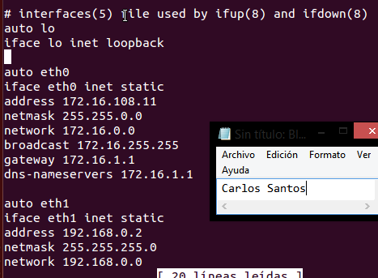
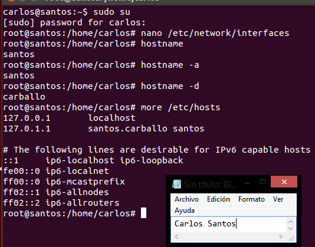
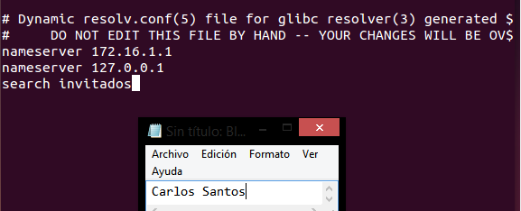
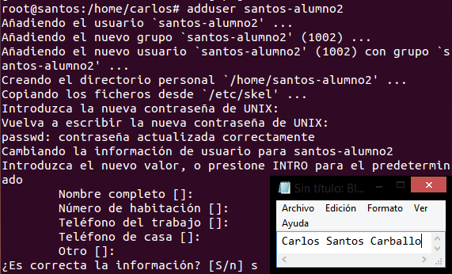
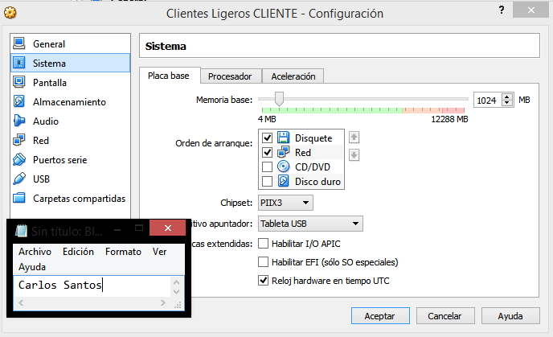
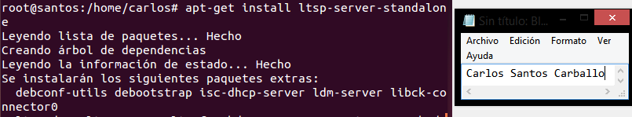
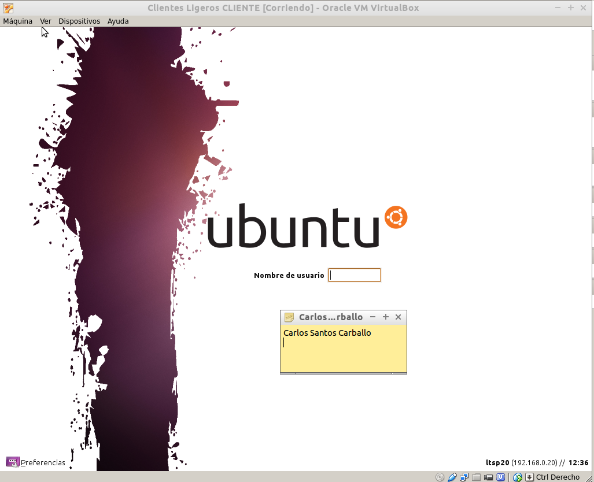
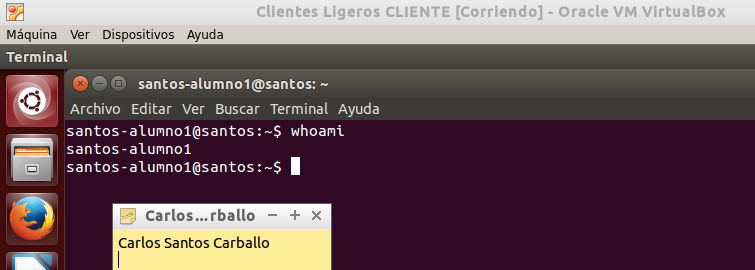

- Módulo: Administración de Sistemas Operativos
- Título del trabajo Clientes ligeros
- Componentes del grupo: Carlos Santos Carballo
- Curso Académico: 2014/2015
- Fecha de entrega: 12 de Diciembre de 2014
Primero creamos una Máquina Virtual con un adaptador modo puente y otro en modo red interna para que así tenga conexión a internet y a nuestro cliente a través de la interna.
Instalamos el sistema operativo correspondiente en el servidor.
Procedemos a configurar las tarjetas de red.
Modificamos los ficheros "/etc/hosts" y "/etc/hostname" y ponemos nuestro primer apellido como nombre del servidor y el segundo apellido como nombre del dominio.
Accedemos al fichero "/etc/resolv.conf" para añadir la ip de router que nos hace de servidor DNS.
A continuación crearemos los usuarios correspondientes con la práctica.
Crearemos una máquina virtual que no tenga disco duro y por lo tanto,sistema operativo. El objetivo es que se conecte al servidor y adquiera la configuracion correspondiente.
Instalamos el servicio :"apt-get install ltsp-server-standalone". a continuación ejecutamos el comando :"ltsp-build-client" para generar las carpetas necesarias para el funcionamiento de los clientes. Por último nos cercioramos que tenemos el ssh instalado y actualizado :"apt-get install openssh-server".
Con el servidor encendido iniciamos nuestra máquina cliente, para que funcione correctamente debe poder conectarse con el servidor y de esta manera adquirir una configuración para poner iniciar.
Iniciamos sesión con un usuario creado anteriormente en el servidor.
